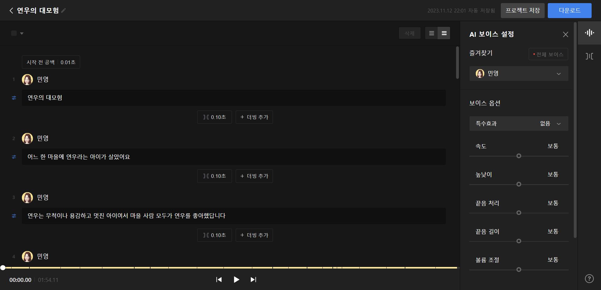
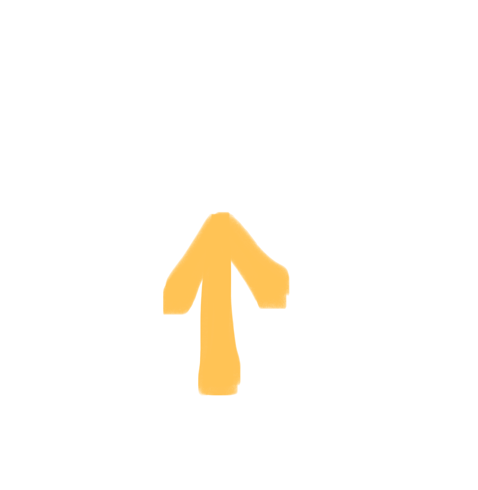

홈으로 가기
홈으로 가기  동화책 보러가기
동화책 보러가기  소감 남기기
소감 남기기  제작 과정
제작 과정
배경, 캐릭터 등 모든 그림은 제가 직접 그렀습니다.

네이버 클로바의 무료 ai 기능을 사용했습니다.
계기
이 동화책은 주인공인 '연우'가 여러 어려움을 겪고 해결하면서 나중엔 엄마를 찾아 성장한다는 내용입니다.
주인공 '연우'는 실제 제 조카인 '연우'를 모델로 그렸습니다.
소심하고 겁이 많았던 저와는 다르게 연우는 멋지고 용감하게 자라길 바라며 이 동화책을 만들었습니다.
연우뿐만 아니라 많은 아이들이 이 동화책을 읽고 용기를 얻어
어려움에 닥쳤을 때 포기하지 않고 용감하게 이겨내길 바라는 마음입니다.
동화책 속 상황들은 실제 제가 어렸을 때 겪었던 어려움들입니다.
그때는 너무 무서웠던 중학교 언니, 오빠들을 문지기로,
시끄럽게 짖어대고 나를 물어버릴 것 같은 작은 강아지는 커다란 소음을 내는 괴물로,
맨날 길을 잃어버리는 학교 근처 주택가를 미로로,
집 근처 작은 공원을 숲으로,
사람과 차가 많아 무서웠던 시내를 거인들의 마을로 정하며
제가 겪었던 무서움과 어려움들을 연우에게 주었습니다.
연우는 용감하게 이겨내고 포기하지 않아 결국 엄마를 찾아 집에 돌아왔습니다.
연우를 위한 동화책이기도 하지만 저의 어렸을 적 이야기가 담긴 일기이기도 합니다.
인생을 살아가면서 힘든 일, 좌절, 고난은 일어납니다.
만약 연우에게 그런 일들이 일어났을 때, 연우가 이 동화책을 읽어주길 바랍니다.
동화책을 읽고 고난이 사라지는 것은 아니지만 책을 읽으면서
잠시 힘듦을 잊고 즐거움을 느껴주었으면 좋겠습니다.
주인공 '연우'는 실제 제 조카인 '연우'를 모델로 그렸습니다.
소심하고 겁이 많았던 저와는 다르게 연우는 멋지고 용감하게 자라길 바라며 이 동화책을 만들었습니다.
연우뿐만 아니라 많은 아이들이 이 동화책을 읽고 용기를 얻어
어려움에 닥쳤을 때 포기하지 않고 용감하게 이겨내길 바라는 마음입니다.
동화책 속 상황들은 실제 제가 어렸을 때 겪었던 어려움들입니다.
그때는 너무 무서웠던 중학교 언니, 오빠들을 문지기로,
시끄럽게 짖어대고 나를 물어버릴 것 같은 작은 강아지는 커다란 소음을 내는 괴물로,
맨날 길을 잃어버리는 학교 근처 주택가를 미로로,
집 근처 작은 공원을 숲으로,
사람과 차가 많아 무서웠던 시내를 거인들의 마을로 정하며
제가 겪었던 무서움과 어려움들을 연우에게 주었습니다.
연우는 용감하게 이겨내고 포기하지 않아 결국 엄마를 찾아 집에 돌아왔습니다.
연우를 위한 동화책이기도 하지만 저의 어렸을 적 이야기가 담긴 일기이기도 합니다.
인생을 살아가면서 힘든 일, 좌절, 고난은 일어납니다.
만약 연우에게 그런 일들이 일어났을 때, 연우가 이 동화책을 읽어주길 바랍니다.
동화책을 읽고 고난이 사라지는 것은 아니지만 책을 읽으면서
잠시 힘듦을 잊고 즐거움을 느껴주었으면 좋겠습니다.
